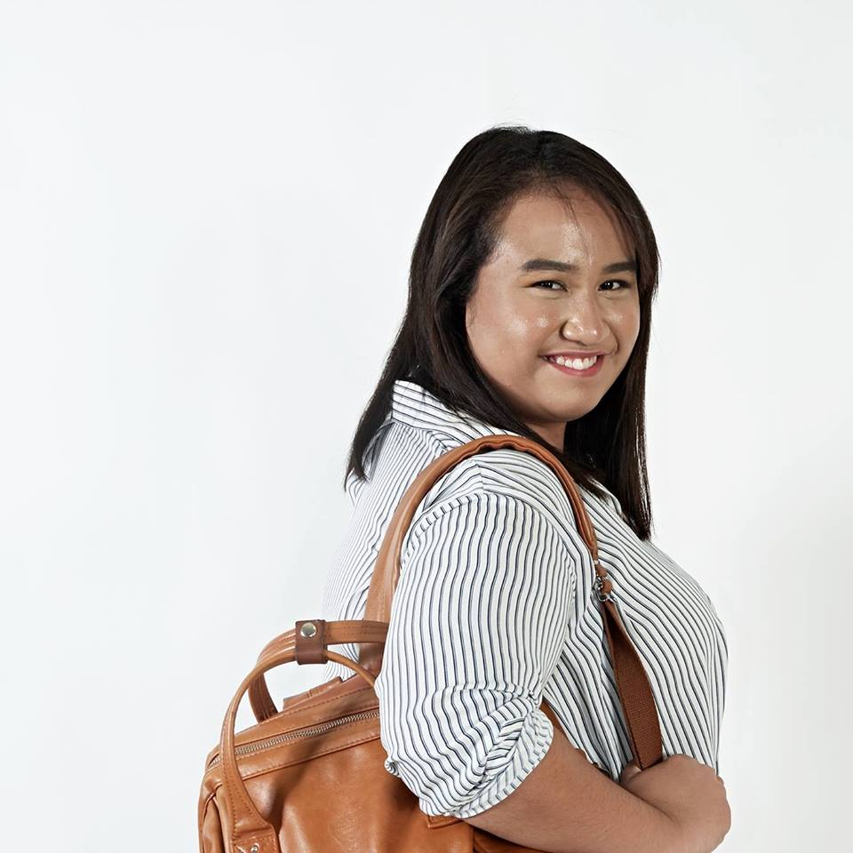

Mary Angeli Louise Abenales
Hey everyone! My name is Mary Angeli Louise P. Abenales. I prefer to be called Angeli than any names you can think of. I'm 19 years old, from Imus, Cavite. I'm taking BS Information Technology major in Mobile and Internet at Asia Pacific College.
I'm interested to IT field because my father made me realize how fast technology can develop and as for them, the older generation, they cannot adapt that fast so they need someone who will teach them. He also wants me to be successful in this field doing something that I will enjoy working.
I like to swim and take photos. So, I enjoy going to destinations where I can swim and take photos. I'm willing to experience different kinds of water activities like cliff diving and professional diving. I also like adventurous activities and discovering new things that my family, friends and I can enjoy. I'm like bands and milktea. Right now, I love listening to OPM bands especially the independent ones.
The only thing that made my freshman year memorable is joining organizations. I love to meet new people since I'm a new student at APC. At the end of term, I became the Vice President for JISSA - APC Chapter.
I spent my vacation at home, watching American TV series on Netflix, YouTube vlogs and dance practices from my favorite K-Pop group Twice.
My expectation for this class is to be enjoyable while learning the subject. As for my professor, I hope she is considerate especially not all of us has a background to the subject and the tools that we are making.